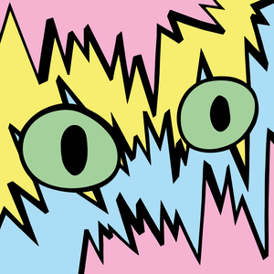

Jayson Turner
Real-time Computer Graphics
Skills
- Producing visual and interactive real-time experiences
- Virtual production (Filming, Lighting, Chroma-key, Kinect)
- Shader Programming (Vertex Animations, Skinning, Particles, Volumes)
- Procedural / Generative Animation
- Creation of tools to support common tasks and visual debugging
- Modeling, Asset Editing, General DCC
- Maintaining living projects
- Software Engineering and Clean Architecture
Tools & Languages
TouchDesigner, Unreal Engine/Niagara, Blender, Houdini, Visual Studio, Renderdoc, Nsight, VSCode, Git, Photoshop, Illustrator, DaVinci Resolve
C/C++, GLSL/OpenGL, Python, Javascript/Web, Swift/ObjC
Experience

thoseEyes
Freelance Creative Technologist
MARCH 2021 - PRESENT
Producer/Director/Developer of 3D music videos for Scottish artists.
- Direction and imagery were determined with clients using collages and wireframe/demo renders to convey ideas
- Project lengths were 2-3 months part-time with frequent (2-3 day/weekly) updates
- Work was scoped to fit the available time/budget
- A range of production tools/services/equipment were used to work at pace
- Technical detail in portfolio
📺 Lucky Night -- bis
Developer/Performer in live-streamed interactive 3D world.
- Virtual environment using Kinect and chat-based interactivity to create a fun live show
- Formerly broadcast on twitch.tv
BBC
Senior Software Engineer
MARCH 2015 - PRESENT
- Significant contributions to BBC News, iPlayer, and Bitesize iOS apps
- Advocate of clean-architecture and modern software principles
- Leader of new features in close collaboration with Product/UX and other teams within BBC
- Frequently trained new engineers
- External presentations on Agile development, TDD, Pairing.

Microsoft Research
Research Intern
JUNE 2013 - AUGUST 2013
- Empirical research into the use of gaze-input for auto-scrolling in hands-free interaction
- Interaction design, development, and evaluation
- Combining off-the-shelf and custom hardware/software to create bespoke experimental systems
- Published at UbiComp 2015
Education
Lancaster University
PhD Computer Science
MAY 2010 - FEBRUARY 2015
- Cross-Device Eye-Based Interaction
- The work looked principally at moving objects between large wall-sized displays and mobile devices using eye-tracking and touch
- Major self-directed academic research
- Complex novel interactive systems built using custom hardware and computer vision
- Published at various top-tier international conferences
Manchester Metropolitan University
BSc (Hons) Computer Science
SEPTEMBER 2005 - JUNE 2009
- Final year project was an iOS music studio app similar to Ableton Live
- Sandwich year at EchoStar Europe
- Low-level C/Assembly development for satellite set top boxes